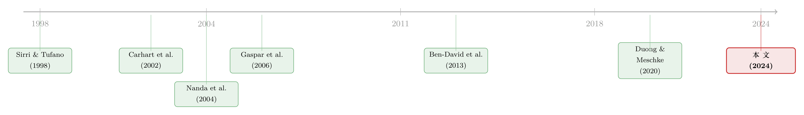

当「拉抬净值」从明星基金经理转移到了他的同事身上
本文读的是 Wang (2024, Journal of Financial Economics)：2002 年美国证监会（SEC）盯紧「拉抬净值」之后，基金家族并没有收手，而是换了个更隐蔽的玩法——让非明星基金去买明星基金持有的股票，把价格顶上去、把明星基金的季末业绩做漂亮。明星基金照样受益，但下单的人换了，监管者从此更难「按图索骥」。
1 一个没有收场的故事
先说一个金融圈早就不算秘密的把戏：拉抬净值 (portfolio pumping)，又叫 painting the tape（粉饰行情）或 leaning for the tape（贴着收盘线下注）。它的逻辑朴素得近乎粗暴——基金经理在季末（或年末）的最后一两天，集中买入自己已经重仓的股票，用买盘把这些股票的价格顶上去；由于基金净值是按收盘价算的，这一顶，账面业绩就漂亮了。
Carhart, Kaniel, Musto, and Reed (2002) 把这件事第一次摆上台面。他们发现共同基金指数的净值在季末、尤其年末会出现异常的「翘尾」，而干这事的，正是那些业绩排名靠前的明星基金——因为它们的报酬和年终排名死死绑在一起。几年后，Ben-David, Franzoni, Landier, and Moussawi (2013) 在对冲基金里发现了同样的指纹。
故事讲到这里，本该有一个干净的结局：监管者出手。2001 年，SEC 开始就「portfolio pumping」约谈基金（Burns (2001)）；2002 年起，明星基金经理再自己动手拉抬净值，就成了一件相当危险的事。后来 Duong and Meschke (2020) 用数据确认：2002 年之后，基金层面的拉抬净值现象急剧下降。
看起来，监管赢了。
但「现象消失」和「行为消失」是两回事。一个聪明的读者此刻会追问：基金家族是真的金盆洗手了，还是只是找到了一条监管照不到的暗道？这正是这篇论文的全部张力所在。
2 真正关键的一步：把「下单的人」和「受益的人」拆开
这篇论文的核心洞见，其实只有一句话——拉抬净值这件事，根本不需要明星基金经理亲自动手。
想清楚这个机制：拉抬净值的本质是「用买盘制造价格冲击，让某只股票在收盘时偏高」。而股价是公共的。只要家族里任何一只基金去买明星基金持有的股票，把价格顶上去，明星基金的持仓就会跟着升值——明星基金一股没买，业绩照样被做漂亮了。
于是，一个家族层面的协同拉抬 (family-level pumping) 就浮出水面：让非明星基金 (non-star fund) 的经理去当那只「执行的手」，明星基金坐享价格冲击带来的好处。
这一拆，妙就妙在它把监管者最依赖的那根线索给剪断了。作者引了一段《华尔街日报》的话，点破了要害：
「监管者……通常没法在不细查机密记录的情况下，把交易对应到具体下单的人。而且监管者还得证明这种交易是蓄意扭曲价格的，专家说，这很难证明。」
明星基金自己一下单，意图和交易在同一只基金里，一查一个准；可一旦下单的是非明星基金、受益的是明星基金，监管者就得在整个家族几十只基金之间「连点成线」，去论证一桩跨基金的合谋。难度陡增。所以作者说，家族层面的拉抬比基金层面更隐蔽，但一样有效。
这其实是一个非常典型的「监管套利」叙事——你在一个层面把门关严，行为就从门缝里渗到另一个层面去。（关于监管如何把「坏行为」从一个角落挤到另一个角落，可参见《被赶走的「坏掮客」去了哪里？——监管缝隙里的打地鼠游戏》。）
而这种家族级的协同，在文献里并非空穴来风。Gaspar, Massa, and Matos (2006) 早就记录过基金家族的一整套「造星」手段：明星基金能拿到优待的 IPO 配额，家族还会协调成员基金互相「换仓」，让明星基金以最低成本调整头寸。本文要做的，是给这张「家族协同」的图谱，再添上市场操纵这关键的一笔。
3 识别策略：怎么去测量一件本该藏起来的事？
难点来了。拉抬净值是一种操纵，没人会在表格里填「我今天拉抬了净值」。作者真正的硬功夫，是把这个看不见的行为，变成一个可以逐季度计算的数。
第一步，先定义谁是明星。明星基金 (star fund) 被定义为家族里 Morningstar 综合评级最高、且至少四星的基金。（关于 Morningstar 评级这套体系本身，可参见《Mutual Fund》。）把家族 k 里所有明星基金对股票 s 的持仓加总，记为 StarHolding，再算出股票 s 在明星组合里的权重：
$$w^{Star}_{k,s,t} = \frac{StarHolding_{k,s,t}\cdot P_{s,t}}{\sum_{l\in L_{k,t}} StarHolding_{k,l,t}\cdot P_{l,t}}$$
其中 L_{k,t} 是明星基金持有的全部股票集合，P 是 CRSP 的股价。这个权重，衡量的是「股票 s 对明星基金有多重要」——权重越高，把它顶上去对明星业绩的拉抬越大。
第二步，量出非明星基金在季末的「买盘压力」。把家族里所有非明星基金对股票 s 的净买入（本季持仓减去上季持仓，取正的那部分）加总，再除以这只股票当季的成交量 Vol：
$$SharesPurchased^{Non\text{-}star}_{k,s,t} = \frac{\sum_{i\in I_{k,t}}\max\!\big(Holding_{i,k,s,t}-Holding_{i,k,s,t-1},\,0\big)}{Vol_{s,t}}$$
为什么要除以成交量？因为同样买 100 万股，砸在一只流动性枯竭的小盘股上，价格冲击远大于砸在一只大盘蓝筹上。除以成交量，得到的才是真正的「交易压力」。
第三步，也是点睛之笔——把「买盘压力」和「靶子权重」相乘再求和，就得到家族层面的拉抬强度：
直觉很清楚：非明星基金越是使劲去买那些对明星基金越重要的股票，FamilyPumping 就越大。 作为对照，作者用一模一样的方法、只把买盘换成明星基金自己的买入，构造了基金层面的 FundPumping：
$$FundPumping_{k,t} = \sum_s SharesPurchased^{Star}_{k,s,t}\cdot w^{Star}_{k,s,t-1}$$
两个测度，一个测「同事替你下手」，一个测「你自己下手」。接下来要看的，就是 2002 年这道分水岭前后，到底是哪一个在驱动明星基金的季末业绩翘尾。
4 数据与那条季末的「翘尾」
数据上，作者用了 CRSP 共同基金库、Thomson Reuters 持仓库、Morningstar Direct 以及 TAQ 日内数据，主样本覆盖 1990–2021 年——恰好是 Carhart et al. (2002) 发表前 12 年、后 19 年。机构日内交易则用了 Ancerno 的交易级数据（1999–2010），广告数据来自 Kaniel and Parham (2017)（2000–2012）。样本只保留国内股票型基金，剔除平均 TNA 不足 500 万美元、或持股少于 10 只的基金；超过 80% 的基金在日历季末披露持仓。
怎么测「业绩翘尾」？作者跑了一个非常干净的「季节性」回归：
$$R_t = b_0 + b_1\,QuarterEnd_t + b_2\,QuarterBeginning_t + b_3\,MonthEnd_t + b_4\,MonthBeginning_t + \epsilon_t$$
QuarterEnd 在 3、6、9、12 月的最后一个交易日取 1，QuarterBeginning 在紧接着的下一个交易日取 1。系数 b₁、b₂ 捕捉的，就是超出市场的季末超额收益和季初超额收益。拉抬净值的指纹很典型：季末为正、季初为负——人为顶上去的价格，第二天就泄了气。
然后，反转出现了。
把明星基金按 FundPumping（自己动手）分成十档，2002 年之前，季末翘尾随 FundPumping 单调递增——自己买得越凶，季末超额越高。这说明这个持仓测度确实抓住了拉抬净值的横截面差异。但同一批明星基金按 FamilyPumping 排序，2002 年前却看不出任何规律——这完全符合「2002 年前监管松，明星经理犯不着绕路，自己买就够了」。
2002 年之后，画面整个翻转：明星基金自己的交易活动不再预测季末翘尾了；可一旦非明星同事大举买入明星基金的持仓，明星基金就出现显著的季末业绩膨胀。而且，这种膨胀主要集中在那些当季跑输同风格同行的明星基金身上——业绩越差、越有动机去搏一把，完全说得通。拉抬还真管用：这些明星基金在随后一个季度拿到了比其他明星基金更多的资金流入。
这就是全文最漂亮的一击：操纵没有消失，它只是从「基金层面」搬到了「家族层面」。 同一套季节性回归、同一批明星基金，监管的分水岭把驱动业绩翘尾的变量从 FundPumping 换成了 FamilyPumping。
5 把镜头推到股票和分钟
家族级的证据还不够。作者进一步把镜头推近，问：被拉抬的股票自己，是不是也露了马脚？
他构造了一个多空组合——买入被非明星基金在季末拉抬最多的股票、卖空拉抬最少的股票。这个组合的累计收益在季末急冲，随后几个交易日迅速反转，量级和基金层面的证据一致。更关键的是，结论对 CAPM 和 Carhart 四因子 alpha 都稳健——这就排除了「翘尾只是因为这些基金暴露在某些会反转的因子上」的解释。
再推近到分钟。用 TAQ 日内数据，被家族策略重度拉抬的股票，在季度最后一个交易日收益强劲，尤其是收盘前最后 30 分钟——这与坊间传闻里那种「贴着收盘线砸单」的画面严丝合缝。
而且作者做了几个很到位的「证伪」检验：不被明星基金持有的股票，季末没有异常的买盘——说明买的不是随便什么股票，而是精准的「靶子」；那些拉抬的家族更可能在随后把这些股票卖掉——排除了「它们只是单纯在抄明星基金的作业」这种良性解释。
最后还有一记重拳。一个最难缠的替代解释是：非明星基金也许只是买了好股票，而好股票本来就更可能被明星基金持有，跟「同一个家族」没关系。为此，作者为每个家族造了一只「伪明星基金」——用家族之外的明星基金持仓来加总，并剔除本家族明星持有的股票，据此构造一个 OutsideFamilyPumping。结果：在这个测度下完全看不到业绩膨胀。这说明家族是有的放矢地拉抬，让价格压力只惠及自己人、而不外溢给竞争对手。
6 非明星经理图什么？——一笔家族内部的补贴
现在来到这个故事里最反直觉、也最深刻的一环。
站在非明星基金经理的角度，替别人拉抬净值是件赔本的事：他得扭曲自己的组合去买那些对自己未必最优的股票，承担了配置失真的成本，好处却归了明星基金。那他图什么？
作者把这笔账算给你看，数字相当克制也相当诚实：
- 拉抬最积极的那一档（top quintile）非明星基金，在随后一个季度比家族里其他非明星基金多拿到
0.8%的资金流入——这是在控制了业绩、橱窗粉饰（window dressing）、return gap 等特征之后的净增量； - 拉抬的代价是：这些基金在随后一个季度确实轻微跑输家族里的其他基金，幅度约
5.2个基点； - 按估计的流量—业绩敏感度折算，这点跑输只对应大约
0.02%的资金流减少。
0.8% 的流入 vs. 0.02% 的流出——净账是正的。也就是说，非明星经理替明星基金卖力，自己是得了实惠的（这还没算上潜在的法律和声誉成本）。
那资金又是怎么被「定向」送到这些卖力的经理手上的？作者给了一个机制：家族层面的广告。Gallaher, Kaniel, and Starks (2015) 早就指出，广告决策由家族统一拍板，而广告支出对资金流有显著正向影响。用一个带广告数据的小样本，作者发现拉抬活动高的基金更可能被独家投放在纸媒广告上——家族通过把广告资源倾斜给这些基金，把资金流引过去，权当对拉抬经理的「酬劳」。
这就把整条激励链条闭合了：家族通过明星业绩翘尾，吃到投资者追逐业绩带来的凸性流入（Sirri and Tufano (1998)）和对非明星基金的溢出流入（Nanda, Wang, and Zheng (2004)），家族规模做大；而非明星经理的报酬本就高度依赖家族规模（Ma, Tang, and Gomez (2019)；Ibert, Kaniel, Van Nieuwerburgh, and Vestman (2018)），加上家族的广告补贴，于是甘愿去当那只「执行的手」。
作者还顺手刻画了「谁更爱拉抬」：家族内与明星基金共享至少一位经理的基金更活跃——共同经理最清楚拉哪只股票最有效；资深经理反而更克制——他们在公司里的股份更高、本该更受益，但声誉成本也更大；规模大、明星少的家族最热衷于家族级拉抬，这与 Nanda et al. (2004)「家族拼命想造星」的判断一致。
7 文献脉络
把这条线索捋一捋，它的来路其实很清晰。
最上游是流量—业绩这块基石：Sirri and Tufano (1998) 证明了资金流对业绩的凸性追逐，这是一切「做业绩」动机的源头。顺着它，Nanda, Wang, and Zheng (2004) 揭示了「明星现象」与家族策略——一个明星能把流量溢出给整个家族。
接着是操纵这条主线：Carhart, Kaniel, Musto, and Reed (2002) 第一次实证了基金的季末/年末拉抬净值，Ben-David, Franzoni, Landier, and Moussawi (2013) 在对冲基金里印证。然后是监管的转折：2002 年 SEC 收紧，Duong and Meschke (2020) 记录了基金级拉抬的「兴起与落幕」。
而 Gaspar, Massa, and Matos (2006) 的「家族偏袒、交叉补贴」提供了另一条暗线——家族会协同成员基金去成就明星。本文恰好站在这两条线的交汇处：当基金级拉抬被监管摁下去，家族把它重组成了一种跨基金的协同操纵。它既是 Carhart et al. (2002) 的「监管后续」，也是 Gaspar et al. (2006) 的「操纵升级版」。

8 评论与延伸（Q&A + 研究方向）
(a) 几个可能的疑问
Q：FamilyPumping 高，会不会只是因为非明星基金和明星基金「英雄所见略同」，买了同样的好股票，而非蓄意操纵？
这正是作者最担心、也花最多力气排除的替代解释。三道防线：一是季末买盘只集中在明星基金持有的股票上，不及其余；二是这些股票随后被反向卖出，不像长期看好；三是用家族之外的明星持仓造「伪明星」构造
OutsideFamilyPumping，业绩膨胀消失。三者叠加，「碰巧买了好股票」很难解释观察到的模式。
Q：把测度从 FundPumping 换成 FamilyPumping 就说「操纵迁移了」，会不会只是 2002 年前后市场结构变了的巧合？
这是识别上最值得追问的点。作者的回应是双重的：2002 年前，是
FundPumping（而非FamilyPumping）单调预测翘尾；2002 年后，关系干净地对调。这种「同一批基金、同一套回归、变量互换」的反转，比单看某一个测度显著要可信得多。但要完全坐实因果，仍受限于 2002 年这道断点是单一时点——任何同期发生的市场变化原则上都无法被完全剥离。
Q：拉抬净值和橱窗粉饰 (window dressing) 是一回事吗？
不是。橱窗粉饰是季末买入赢家、卖出输家，让披露出来的持仓「看起来漂亮」，动的是报表的卖相；拉抬净值是用买盘顶高价格，动的是净值的数字。作者在算非明星基金的超额流入时，专门控制了
Winner Prop、Loser Prop等橱窗粉饰代理变量，以确保0.8%不是橱窗粉饰冒充的。
Q：非明星经理明知拉抬会让自己组合失真，为什么还干？这不违背他对自己投资者的受托责任吗？
正是本文比既有研究更尖锐之处。
0.8%的流入净赚0.02%的流出，对经理个人划算；但这笔账是经理拿自己基金投资者的配置效率去换的——非明星经理没有为自己的投资者尽责，而是扭曲资产配置去补贴家族里的明星。这是一种比「明星自己拉抬」更严重的代理问题。
Q：5.2 个基点的跑输，会不会小到根本不值一提，意味着这事其实无关痛痒？
单季
5.2bps 确实不大，但这恰恰是策略「能持续」的原因——成本足够小，小到被0.8%的流量收益盖过，所以没有自我纠正的力量。要注意作者明说了：这只算了配置成本，没算潜在的法律与声誉成本。一旦把后者计入，账未必还是正的——这也是为什么资深经理更克制。
Q：监管者真的拿这种家族级操纵没办法吗？
难点不在数据可得性——家族共用交易台，所有基金的持仓都要通过 Form 13-F 报给 SEC。难点在举证：要把跨越几十只基金的交易拼成一个「蓄意扭曲价格」的合谋意图，远比盯住单只基金费力。本文的价值之一，正是把这条暗道用可计算的测度显形了出来。
(b) 几个可能的研究问题与提案
1. 公司债基金里有没有「家族级拉抬」？
【经济故事】公司债流动性远低于股票，少量买盘就能显著推高价格，季末「顶一下」的边际成本更低、效果可能更猛；且债基净值依赖的是交易稀疏的报价，更易被影响。
【可行性】中。需要 TRACE 逐笔成交 + Morningstar/CRSP 债基持仓 + 家族识别，识别可沿用本文的
FamilyPumping构造与季末季初的事件式回归。难点在债券成交稀疏导致「成交量标准化」噪声大，可能要用做市商报价或换手代理。方向天然契合公司债流动性议题。
2. 外资持有人是「拉抬」的帮凶还是刹车？
【经济故事】如果一只股票被本国基金家族当作拉抬靶子，而同时有大量被动型外资持有，外资的低换手可能放大价格冲击（漂浮股本更少）；反之，活跃外资若识破季末异常并反向交易，则可能抑制翘尾。
【可行性】中。需把 FactSet/13-F 的外资持股与本文的拉抬测度按股票—季度匹配，看翘尾幅度如何随外资持股结构（被动 vs. 主动）变化。识别上可用指数纳入等外生冲击作为外资持股的工具。
3. 家族广告投放与拉抬的因果链能否被更干净地识别？
【经济故事】本文用小样本广告数据给出「家族把广告倾斜给拉抬基金」的相关证据，但广告与流量、流量与拉抬之间互为因果。若能找到广告定价或版面供给的外生冲击，就能把「广告→流量补贴」这一环坐实。
【可行性】中偏低。瓶颈是广告数据稀少且选择性强（Kaniel and Parham (2017) 的样本本就有限）。可考虑用纸媒广告费率的外生变动，或特定刊物停刊/创刊作为冲击。诚实地说，数据是最大约束。
4. 季末翘尾会不会被指数化/被动资金的崛起稀释？
【经济故事】当越来越多资金流向被动产品，主动明星基金的「业绩排名」对流量的边际影响下降，拉抬的收益也随之缩水。2010 年代被动化加速，理应削弱家族级拉抬的动机。
【可行性】高。本文样本到 2021 年，已足够覆盖被动化时段。把
FamilyPumping与翘尾的关系做成滚动/分时段估计，再叠加家族被动份额，即可检验「被动化是否在熄灭拉抬」。数据本文都已具备。
9 我的判断
这是一篇问题问得极准、刀法极干净的论文。它最大的贡献，不是发现了「拉抬净值」这件早被记录的事，而是论证了监管把它从基金层面挤压到了家族层面——并且给出了一个可计算、可证伪的测度，把一桩本该藏在暗处的跨基金合谋，变成了数据里看得见的模式。「同一批基金、监管前后驱动变量互换」这一击，尤其漂亮；而 OutsideFamilyPumping 这个伪明星对照，是我见过对「碰巧买了好股票」这类内生性解释最利落的回应之一。它对代理问题的刻画也更深一层：非明星经理不是为自己的投资者尽责，而是拿他们的配置效率去补贴明星——这比明星自己拉抬更让人不安。
要说对识别的担忧，有两点。其一，2002 年是单一断点，所有「监管后续」型研究都共享这个软肋——任何与监管同期发生的市场结构变化（交易成本下降、机构化加深），原则上都无法被完全剥离，作者的反转证据令人信服但非铁证。其二，广告这一环偏弱：「家族补贴拉抬经理」的渠道目前建立在一个小样本的相关性上，是整篇论文里最需要后续补强的链条。
往后我最想看到的，是把这套测度搬到公司债基金和指数化时代里去：前者检验流动性更差的市场是否让拉抬更猖獗，后者检验被动化是否正在悄悄熄灭这门生意。这两个方向，本文的工具几乎可以直接迁移。
参考文献
- Ben-David, I., Franzoni, F., Landier, A., & Moussawi, R. (2013). Do hedge funds manipulate stock prices? Journal of Finance 68(6), 2383–2434.
- Burns, J. (2001). SEC is examining mutual funds for possible 'portfolio pumping'. Wall Street Journal.
- Carhart, M. M. (1997). On persistence in mutual fund performance. Journal of Finance 52(1), 57–82.
- Carhart, M. M., Kaniel, R., Musto, D. K., & Reed, A. V. (2002). Leaning for the tape: Evidence of gaming behavior in equity mutual funds. Journal of Finance 57(2), 661–693.
- Duong, T. X., & Meschke, F. (2020). The rise and fall of portfolio pumping among US mutual funds. Journal of Corporate Finance 60, 101530.
- Gallaher, S. T., Kaniel, R., & Starks, L. T. (2015). Advertising and mutual funds: From families to individual funds. CEPR Discussion Paper No. DP10329.
- Gaspar, J. M., Massa, M., & Matos, P. (2006). Favoritism in mutual fund families? Evidence on strategic cross-fund subsidization. Journal of Finance 61(1), 73–104.
- Ibert, M., Kaniel, R., Van Nieuwerburgh, S., & Vestman, R. (2018). Are mutual fund managers paid for investment skill? Review of Financial Studies 31(2), 715–772.
- Kacperczyk, M., Sialm, C., & Zheng, L. (2008). Unobserved actions of mutual funds. Review of Financial Studies 21(6), 2379–2416.
- Kaniel, R., & Parham, R. (2017). WSJ Category Kings – The impact of media attention on consumer and mutual fund investment decisions. Journal of Financial Economics 123(2), 337–356.
- Ma, L., Tang, Y., & Gomez, J. P. (2019). Portfolio manager compensation in the US mutual fund industry. Journal of Finance 74(2), 587–638.
- Nanda, V., Wang, Z. J., & Zheng, L. (2004). Family values and the star phenomenon: Strategies of mutual fund families. Review of Financial Studies 17(3), 667–698.
- Sirri, E. R., & Tufano, P. (1998). Costly search and mutual fund flows. Journal of Finance 53(5), 1589–1622.
- Wang, P. (2024). Portfolio pumping in mutual fund families. Journal of Financial Economics 156, 103839.